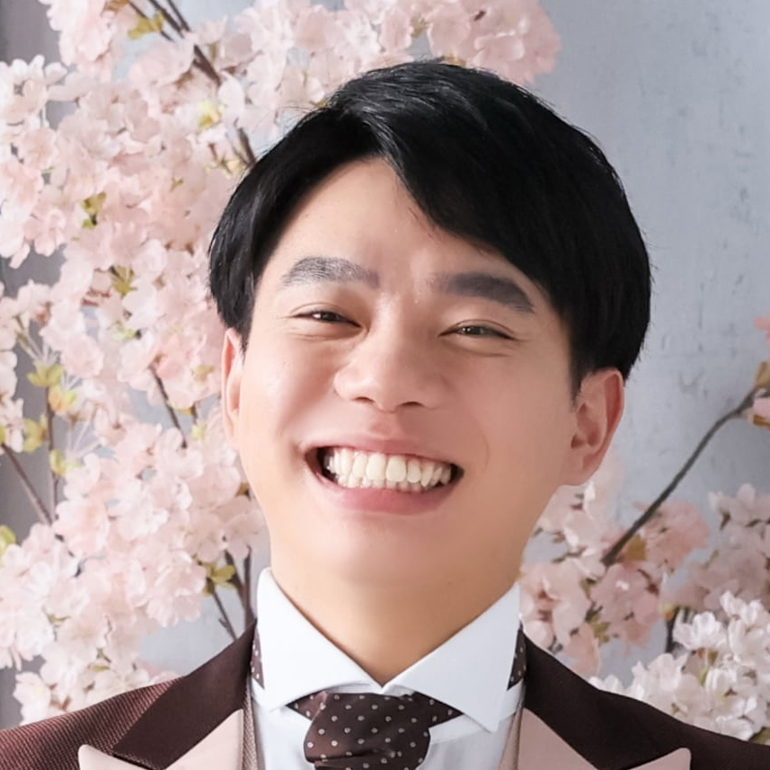
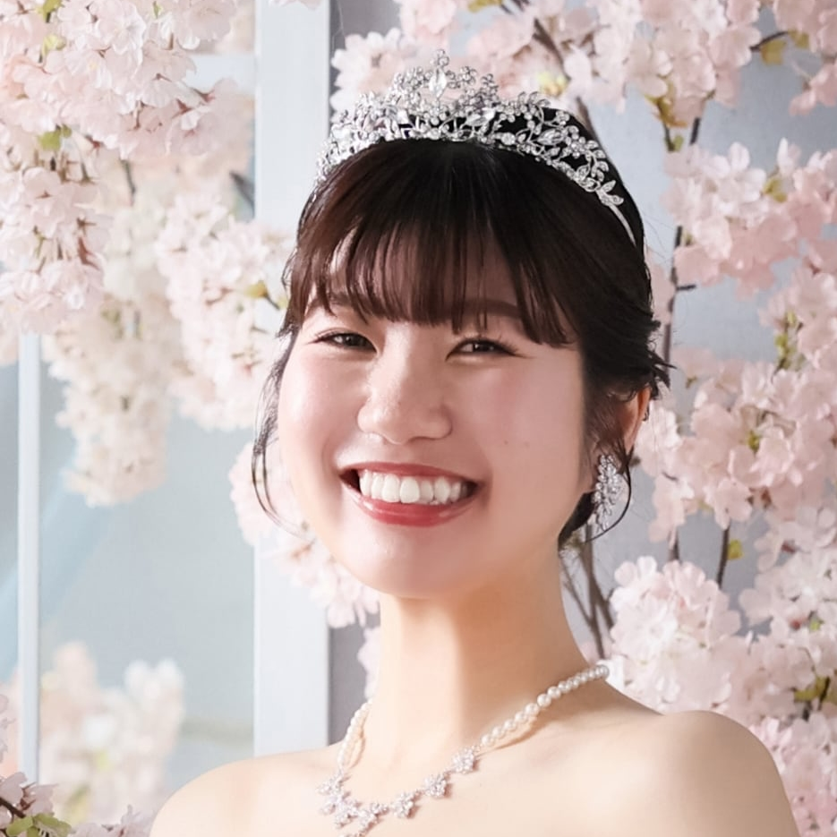

2026年5月16日（土）
THE KAWABUN NAGOYA
✦
本日はご多用の中
わたしたちのウエディングパーティに
お越しいただきありがとうございます
日頃お世話になっております皆さまと
今日という特別な日をむかえられることを
とても嬉しく思います
今日は思いっきり楽しんでください！
みなさまとたくさんお話できることを
心から楽しみにしています
プロフィールProfile

井田 啓介
Groom
| 生年月日 | 1997年7月30日 |
| 出身地 | 愛知県刈谷市 |
| 血液型 | O型 |
| 趣味 | 楽器、読書 |
| 好きな食べ物 | ラーメン、ラムネ |
| よく見るYouTuber | りょさん |
| 彼女の好きなところ | 話していて面白いところ しっかりしているところ |
| 彼女の直して欲しいところ | 可能であれば僕の意見にも耳を傾けてほしいです、、、 |
🎵 好きなアーティスト Best 3
- ヨルシカ
- NELKE
- 文藝天国
最近のコナン映画 Best 3
- 名探偵コナン 黒鉄の魚影
- 名探偵コナン 100万ドルの五稜星
- 名探偵コナン ハイウェイの堕天使

藤浪 佑衣
Bride
| 生年月日 | 1999年6月15日 |
| 出身地 | 三重県伊勢市 |
| 血液型 | O型 |
| 趣味 | 旅行、謎解き |
| 好きな食べ物 | カニクリームコロッケ |
| よく見るYouTuber | 社畜OLちえ丸 |
| 彼の好きなところ | なんでも笑ってくれるところ |
| 彼の直して欲しいところ | ここには書ききれません。 |
🎵 好きなアーティスト Best 3
- サカナクション
- King Gnu
- TOMOO
人生で衝撃的だったおいしいご飯 Best 3
- 氷見のブリしゃぶ
- 今日のコース料理（お椀の出汁）
- 竜泉寺の湯のカツ丼

啓介 & 佑衣
Our Story
2人のあゆみ
2023年8月
出会い
2023年10月
交際開始
2024年7月
同棲開始
2025年6月
プロポーズ
2026年3月
入籍
2026年5月
結婚式 🎉
| 出会いのきっかけ | アプリ |
| 思い出の旅行 | ディズニー旅行 |
| 2人のお気に入りの場所 | 竜泉寺の湯（守山本店） |
| よく行くお店 | サイゼ、ガスト、スシロー🍣 |
| 将来の夢 | 楽しく幸せな毎日を送っていきたい |
2人のサイゼリヤいちおしメニュー
- エスカルゴのオーブン焼き（税込400円）
- たまねぎのズッパ（税込300円）
- ほうれん草のソテー（税込200円）
*なおミラノ風ドリアは殿堂入り
*2026年5月16日時点の情報です
2人の旅行の思い出
- 誕生日ディズニー旅行
- デジタルデットクス上高地旅行
- クリスマスユニバ旅行
2人の対談Interview
Q. 出会いはどこで？

啓介
出会いはアプリだったね〜
最初ご飯に誘ったらラーメン食べたいって言われて、本当にラーメンでいいのか？ってなった笑
最初ご飯に誘ったらラーメン食べたいって言われて、本当にラーメンでいいのか？ってなった笑

佑衣
ラーメンを食べたかったのは本心だったよ。初めて会った日が夜だったから居酒屋とかオシャレなディナーとかは緊張と警戒心があったのよね。その後に久屋のミライズタワーのプロジェクションマッピング見に行ったね
啓介
確か最終日で行かなきゃってなっていったよね。でも石川県トークで盛り上がって結局あんまり見なかったね笑
Q. 第一印象は？
佑衣
事前情報でイダ君がバンドマンなことは知ってたけど、想像以上の陽キャが来たから怖かった笑
黒シャツ、よく喋る、バンドマン、ピアスの4拍子で、やばい陽キャを引き当てたかもって思ってた
黒シャツ、よく喋る、バンドマン、ピアスの4拍子で、やばい陽キャを引き当てたかもって思ってた
啓介
頑張って明るく振る舞ってたのよ！笑
佑衣ちゃんの印象は、パッと見たときに写真より可愛い人が来たぞって思った笑
おとなしいけど、楽しくなると色々喋ってくれるな〜って印象だったね
佑衣ちゃんの印象は、パッと見たときに写真より可愛い人が来たぞって思った笑
おとなしいけど、楽しくなると色々喋ってくれるな〜って印象だったね
佑衣
中身は陰キャだったね（よく考えたらなかなかデート誘ってくれなかったな、、、）
Q. 一番印象に残ってる思い出は？
啓介
ディズニー旅行かな〜
あ、でもやっぱり上高地の熊(？)遭遇事件かな笑
あ、でもやっぱり上高地の熊(？)遭遇事件かな笑
佑衣
確かに、あれは死を覚悟したね。
結局熊じゃなくて猿だったけど、、、
結局熊じゃなくて猿だったけど、、、
啓介
ちょっと暗くなってきてて周りに人もいない中歩いてて、けむくじゃらの4足歩行が見えたら熊に思っちゃう笑
前も後ろも猿に挟まれてゆっくり歩いたね
前も後ろも猿に挟まれてゆっくり歩いたね
佑衣
行く前に熊目撃情報があって警戒してた場所だったからこそ余計に怖かったね
全ては行きの車でジブリトークが盛り上がりすぎて高速降りそびれて到着が遅れたのが原因だね
全ては行きの車でジブリトークが盛り上がりすぎて高速降りそびれて到着が遅れたのが原因だね
Q. プロポーズのエピソードは？
啓介
最初はプロポーズしようと思って何を渡そうか探りを入れた時に、指輪はいらないからネックレスが欲しいって言われてて、色々探してたけど、プロポーズしようと思ってる日が近づいてきた時にやっぱり指輪がいいって言われて色々焦ったね笑
佑衣
せっかくもらうなら毎日つけれるものがいいなって思ってネックレスと思ってたけど、やっぱりゼクシー見たら指輪も欲しくなった笑
啓介
ちゃんと指輪が間に合って安心した笑
あとはディズニー旅行の1日目が終わったタイミングでホテルでプロポーズしようと思ってたけど、体力がなくなっちゃんじゃないかって心配だった
あとはディズニー旅行の1日目が終わったタイミングでホテルでプロポーズしようと思ってたけど、体力がなくなっちゃんじゃないかって心配だった
佑衣
ちゃんと体力はなかったよ？笑
次の日のディズニシーに全力だったから早く寝たいってなってた
ごめんね笑
ただプロポーズは全然気づけてなかったよ！
次の日のディズニシーに全力だったから早く寝たいってなってた
ごめんね笑
ただプロポーズは全然気づけてなかったよ！
啓介
とりあえずバレずにサプライズできてよかった笑
プロポーズ終わってちょっと写真撮ったらすぐ寝たね
プロポーズ終わってちょっと写真撮ったらすぐ寝たね
佑衣
やっぱり次の日が勝負ですから！
Q. 結婚式終わったら何したい？
佑衣
まずは断捨離、家の掃除かな
落ち着いたらいったことない地下鉄の駅巡りとかしたいな〜
落ち着いたらいったことない地下鉄の駅巡りとかしたいな〜
啓介
自分も掃除かな、、、色々誤魔化しておいたままになってるやつをちゃんと片付けなきゃ、、、
あとは勉強をもうちょっと頑張らないとだ
あとは勉強をもうちょっと頑張らないとだ
佑衣
私がしっかり見張らないと🔥
あと家が早く欲しいです。
あと家が早く欲しいです。
啓介
家ね〜、、、
頑張って働きます、、、
頑張って働きます、、、
謎解きMystery
写真Photo Sharing
今日の素敵な瞬間をみんなでシェアしましょう。
Wedding Share で写真、動画の投稿・閲覧ができます。
✦
Wedding Share の使い方
1
Wedding Share へアクセスする
上記のリンクから Wedding Share にアクセスしてください。
2
コミュニティを選択
リンク先で各コミュニティに参加してください
3
写真・動画を投稿
撮影した写真・動画をアップロードする際、コミュニティ限定にするかみんなでシェアするか選択ができます。任意の方を選んで写真を共有してください。コミュニティ限定にするとそのコミュニティの人しか見ることができません。後から変更も可能です。
4
写真にいいね/ダウンロード
お気に入りの写真をいいね、ダウンロードできます。式後もアルバムはしばらく閲覧できます。
5
最後に
式の写真、動画もどんどん追加してくれると嬉しいです！また式関係ない写真もありです！
メッセージMessage for you
おふたりからゲストの皆さまへ、
一人ひとりへのメッセージをご用意しました。
お名前を入力してご覧ください。
お名前を入力してください（スペースなし・漢字フルネーム）
To
🔍
ご入力いただいたお名前は見つかりませんでした。
漢字・ひらがな・カタカナをお確かめの上、再度お試しください
ご入力いただいたお名前は見つかりませんでした。
漢字・ひらがな・カタカナをお確かめの上、再度お試しください
Today's MusicWedding Playlist
今日のために選んだ、大切な曲たちです。
気になった曲があれば聞いてみてください